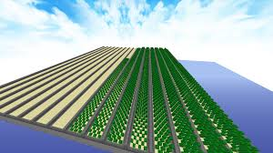

March 23, 2025

"Passive money, easy growth – but is it still worth farming?"
Cactus farming in Hypixel Skyblock has long been an AFK-friendly way to generate income, thanks to its automated growth and simple mechanics. However, recent economy shifts and bazaar changes have made its profitability questionable.
Early Days
When Hypixel Skyblock first launched, players quickly discovered that cactus farms could be built to generate large amounts of coins passively.
2021 - The Nerf
Due to excessive profits, Hypixel adjusted cactus prices, reducing the efficiency of large-scale farms.
2024 - Present
Cactus farming is still viable, but mainly for players who want an AFK income rather than high-efficiency profit-making.